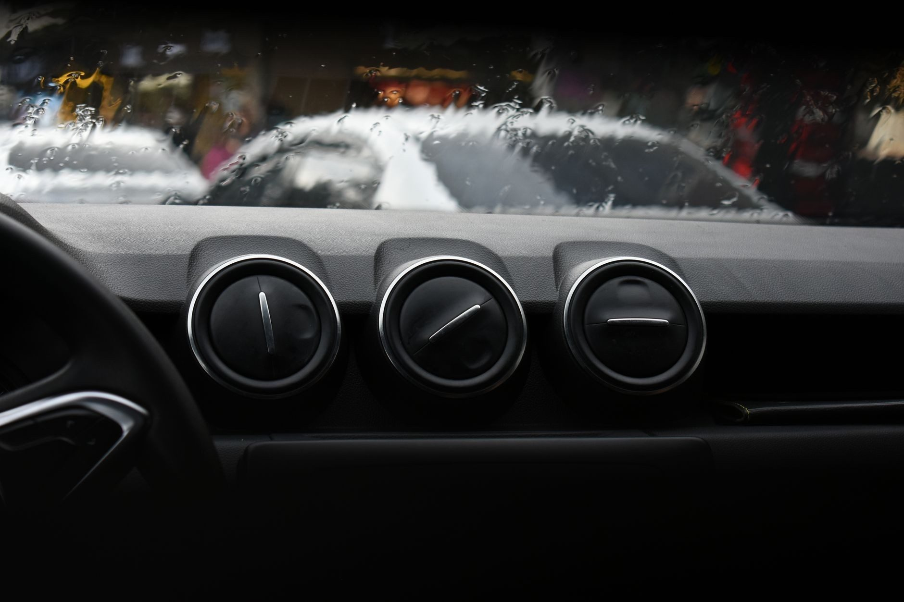
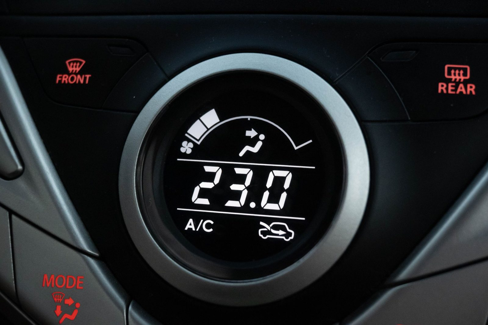
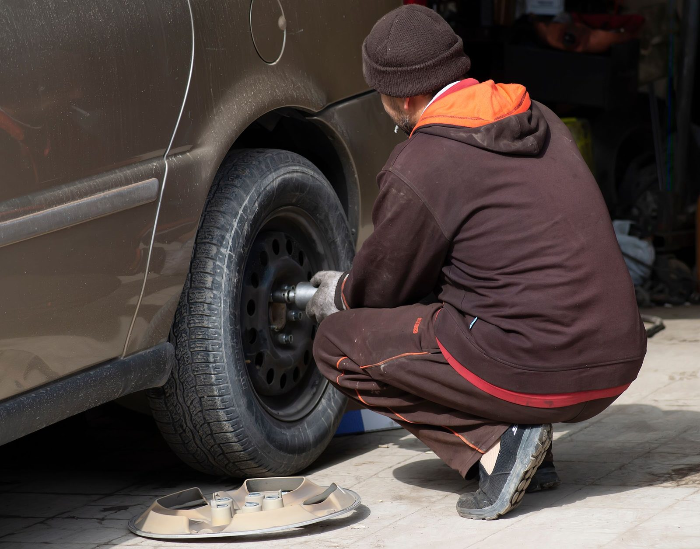
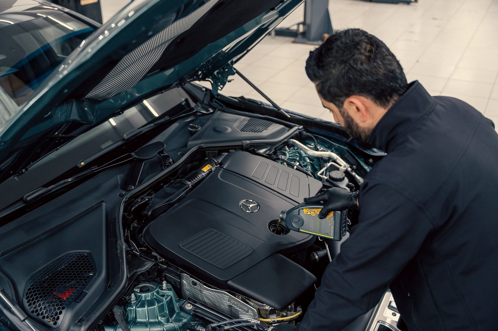
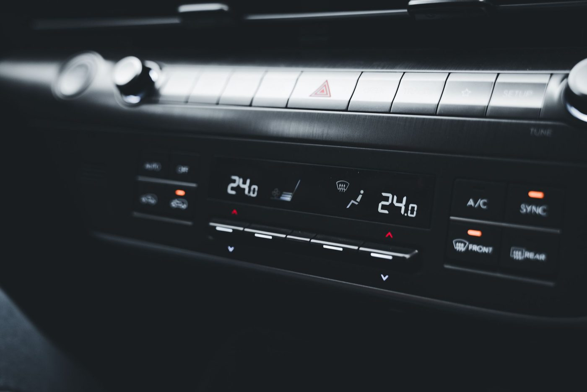
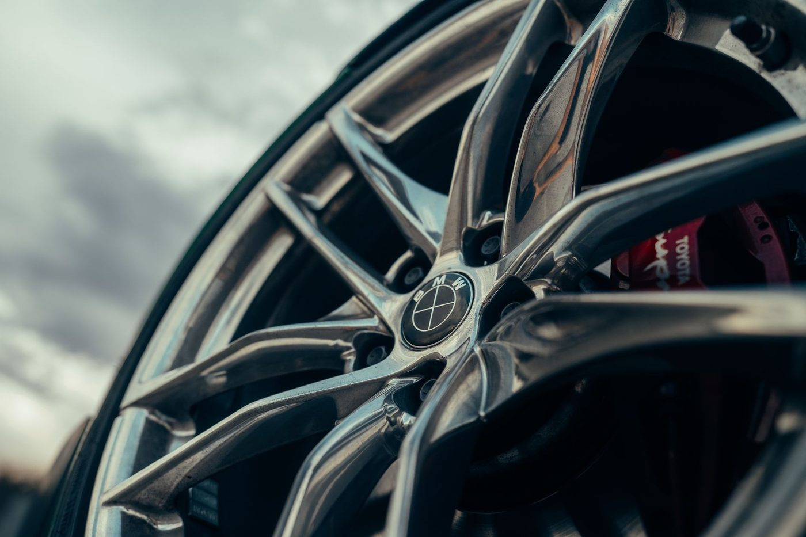
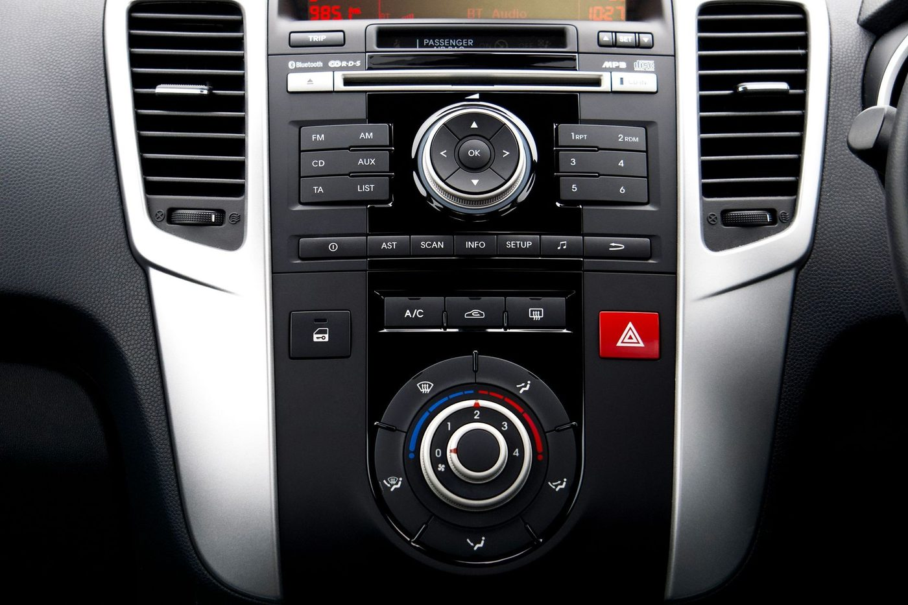

Galeria
Felgi, klimatyzacja, opony
Nasz warsztat w Pyrzycach i zdjęcia poglądowe tego, czym zajmujemy się na co dzień.
Galeria
Z bliska
Pierwsze zdjęcie to nasz warsztat przy Jana Pawła II. Pozostałe są poglądowe: tak wyglądają rzeczy, którymi zajmujemy się na co dzień.











Felga drży albo klima nie chłodzi?
Zadzwoń, opisz objawy i umów termin. Powiemy, ile to potrwa.